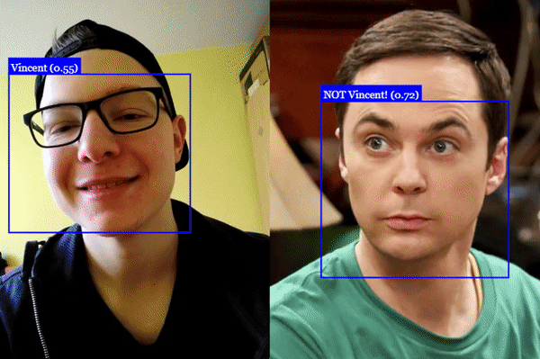

face-box¶
face-box ist eine Anwendung zur Erkennung eines Gesichts und visuellen Darstellung in Form einer Boundingbox um das Gesicht. In dieser Dokumentation sollen alle technischen Konzepte und benutzten Frameworks erläutert werden. Außerdem soll auch beschrieben werden, wie die Anwendung gestartet werden kann.
Es gibt zwei Methoden. Entweder kann man mit unserem Dockerfile eine Image bauen und diese starten oder man kann die Anwendung über nodejs starten.
Getting started: With Docker | With Nodejs
Evaluation¶
Im Rahmen der Implementation der facebox Anwendung wurden verschiedene Frameworks evaluiert.
Wir haben uns für die Implementierung face-api.js entschieden, da die Anbindung an unsere
Infrastruktur sehr flexibel war und die Anforderung alle gedeckt wurden. Außerdem wurde mit faceapi.js Gesichter in durschnitlich
200ms erkannt. Dies war mit Abstand das beste Ergebnis, das wir mit den oben genannten Technologien erzielen konnten. In den verschiedenen
Frameworks gab es oft nicht viel Spielraum für Konfigurationsmöglichkeiten, da die Architektur (z.B. neuronales Netz) bereits vortrainiert wurde.
Deswegen konnten wir die Bibliotheken, aus unserer Sicht, für unseren Usecase nicht viel optimieren. Die erzielten Ergebnisse basierten auf einen
Heimcomputer mit einer GTX 970 Grafikkarte und i5 8600k Prozessor.
Außerdem wurde evaluiert, ob der Service direkt an den Browser angebunden werden kann und somit die Berechnung der Bounding-Box direkt am Computer des Endnutzers erfolgt. Dies wurde nur mit der face-api.js getestet. Jedoch hat sich gezeigt, dass die Berechnung am Computer der Nutzer dazu geführt hat, dass die Anwendung langsamer lief, da die Bibliothek auf eine starke Grafikkarte angewiesen ist. Dies kann man bei einem solchen Setup nicht immer gewährleisten.
Bounding Box Berechnen¶
Der Kernpunkt dieses Services ist es Anfragen über die Gesichtererkennung zu bearbeiten und
als Antwort die Eckpunkte eines Gesichts zurückzugeben. Die Bounding Box wird hierbei durch das Framework
face-api.js realisiert. Das Framework betreibt verschiedene
neuronale Netze, die man laden kann und mit Bildern trainieren kann. Für unsere Anwendung benutzen wir ein
vortrainiertes Model faceLandmark68TinyNet, das für die schnelle Erkennung von Gesichtern optimiert wurde. Alle modelle sind in dem Ordner
/models verfügbar. Um den Dienst anzusprechen muss man über das richtige MQTT Topic eine Anfrage schicken. Als Antwort kommt dann entweder eine Fehlermeldung oder
das gewünschte Ergebnis in der entsprechenden MQTT Topic. Welche Topic man hierbei betrachten muss, wird in public api beschrieben.
Visuelle Darstellung in Form eines Rechtecks¶
Sobald das Gesicht von der face-api im Backend erkannt wird, werden die Informationen benutzt, um die Eckpunkte des Gesichts zu erfassen und ein gelbes Rechteck um das Gesicht zu malen. Hierbei wurde ein einfaches Canvas über das Video-Canvas gelegt, um die Form zu zeichnen.
Hier ist ein beispielhaftes Abbild von der Funktionalität der face-api.js.
{kind=link}
Bemerkung
Face-box gibt nur die Bounding-Box aus und nicht die im Bild demonstrierten Features. Der Usecase kann aber nach Bedarf erweitert werden, da das Framework dies bereits zur Verfügung stellt.